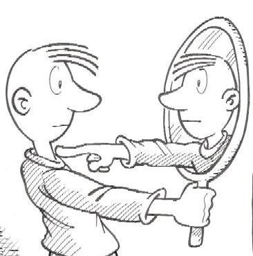

Enfoque Biológico

Existen dudas acerca de qué partes de nuestro cerebro nos permiten poseer autoconocimiento y como es que estamos programados de forma biológica para esto.
Existen dudas acerca de qué partes de nuestro cerebro nos permiten poseer autoconocimiento y como es que estamos programados de forma biológica para esto.